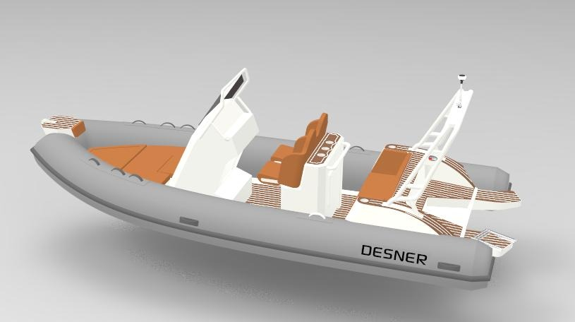

Beach landings
A welded aluminium hull with a full-length keel guard allows the boat to be brought onto the sand and pushed off again without damage to the hull.
A 5.8 metre aluminium-hulled RIB, delivered to New Zealand fully rigged.
NZ$69,990 drive-away
The Sport 580 is designed for exploring the coast. Its aluminium hull can be brought up onto the beach, its tubes keep it composed in rough water, and its outboard has the torque to tow skiers and wakeboarders. The helm seat and sundecks are trimmed in diamond-stitched, leather-effect upholstery, set against teak-effect EVA decking and white aluminium fittings.
Mercury’s performance outboard, built around a 2.1-litre inline four for strong torque from low revs.
The Command Thrust gearcase turns a larger propeller, lifting a loaded boat onto the plane sooner and holding it there under tow.
Rigid-inflatable boats are used by surf rescue services, coastguards and navies around the world. A solid hull beneath buoyant tubes gives the format its stability in broken water.
A welded aluminium hull with a full-length keel guard allows the boat to be brought onto the sand and pushed off again without damage to the hull.
A 25° deep-V entry cuts into short, steep chop, while the tubes add buoyancy at the bow and sides. The self-draining deck clears water through non-return valves.
At rest, the 52 cm tubes sit on the water. The boat stays level as passengers move around, stand at the side or climb aboard.
Enter the water over the tube and return by the stern ladder, with a freshwater shower on board. The Simrad’s 3-in-1 transducer images the seabed below and to either side.
The Mercury 115 Pro XS with Command Thrust gearcase brings skiers, wakeboarders and biscuits up quickly. On the road, the boat travels on a braked Aakron trailer.
A 115 L fuel tank, shade from the T-top, a marine stereo, a table on the back of the helm seat, and lounging at the bow and stern.
At speed, the 25° deadrise lets the hull cut cleanly through a head sea. At rest, the tubes and 2.44 m of beam keep the boat level and steady.
As the boat rolls, the tube on the low side is pressed into the water and its buoyancy pushes the hull back towards level. The deck stays steadier in a beam sea, and the boat resists heeling when people move to one side.
Traced from Desner’s general arrangement drawing.
An onboard freshwater tank feeds a handheld shower at the stern. Ideal for rinsing off the salt after a surf or a spearfishing dive, and for washing down gear before the drive home.
Every surface you sit on, hold or stand on is specified for life in salt water and finished with care.
Light, consistent steering across the speed range, finished with a custom helm wheel.
Dedicated engine gauges at the helm, with VesselView Link bringing revs, fuel and trim onto the Simrad screen.
Select a point to view details.

SWF950 aluminium helm seat with leather-effect, diamond-stitched upholstery. A fold-out table is mounted on the back.
Factory render shown. Delivered boats are fitted with the aluminium T-top.
NZ$69,990
Drive-away price, including the Mercury outboard, Simrad electronics, braked trailer and shipping to New Zealand.
Enquire nowViewings are available in Auckland. Send your details and preferred contact method, and we will be in touch.